她總是同理地關心業主家中每一個人的生活細節和獨特性，這讓她所設計的家充滿人的溫度和生活的氣味；對住宅家人之間感情的關照、對生活本質的展現，始終保持高度的堅持和關懷。
龔書章
建築師・陽明交通大學建築研究所教授
出自《朗然小徑》專文推薦序 →
從需求到設計——打造真正適合自己的家。本課程跳脫「樣板格局」與「習慣性成見」，貼緊「人」本身，教你從「個性」與「行為」發展設計，打造心靈得以安歇的居所。
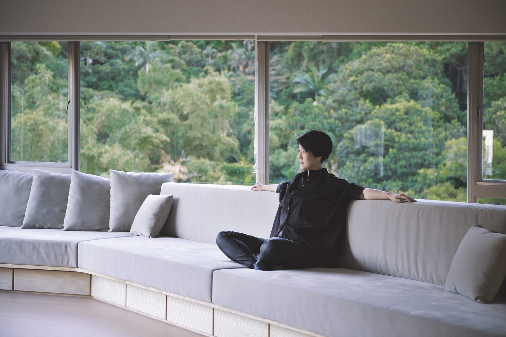
你以為的理所當然，藏著最多「視而不見」。
生活是繁雜而多樣的，因著使用者體型、物品大小、輕重、使用頻率，各自有適合安放的位置。在有限的空間中，順手的收納、合用的櫃體，搭配適度的斷捨離，空間有餘裕，這樣的家，才真正住得久。
本課程跳脫「樣板格局」與「習慣性成見」，貼緊「人」本身，教大家如何從「個性」與「行為」發展設計，打造心靈得以安歇的居所。
那些每天重複、習以為常的生活動作，正是最常被忽略的設計關鍵。
不從風格出發、不套樣板格局——從你是誰、你怎麼生活開始。
一切都與人的個性與行為息息相關——看懂了，就再也回不去了。
兩個真實案例——改造的效果如何，讓住在裡面的人自己說。
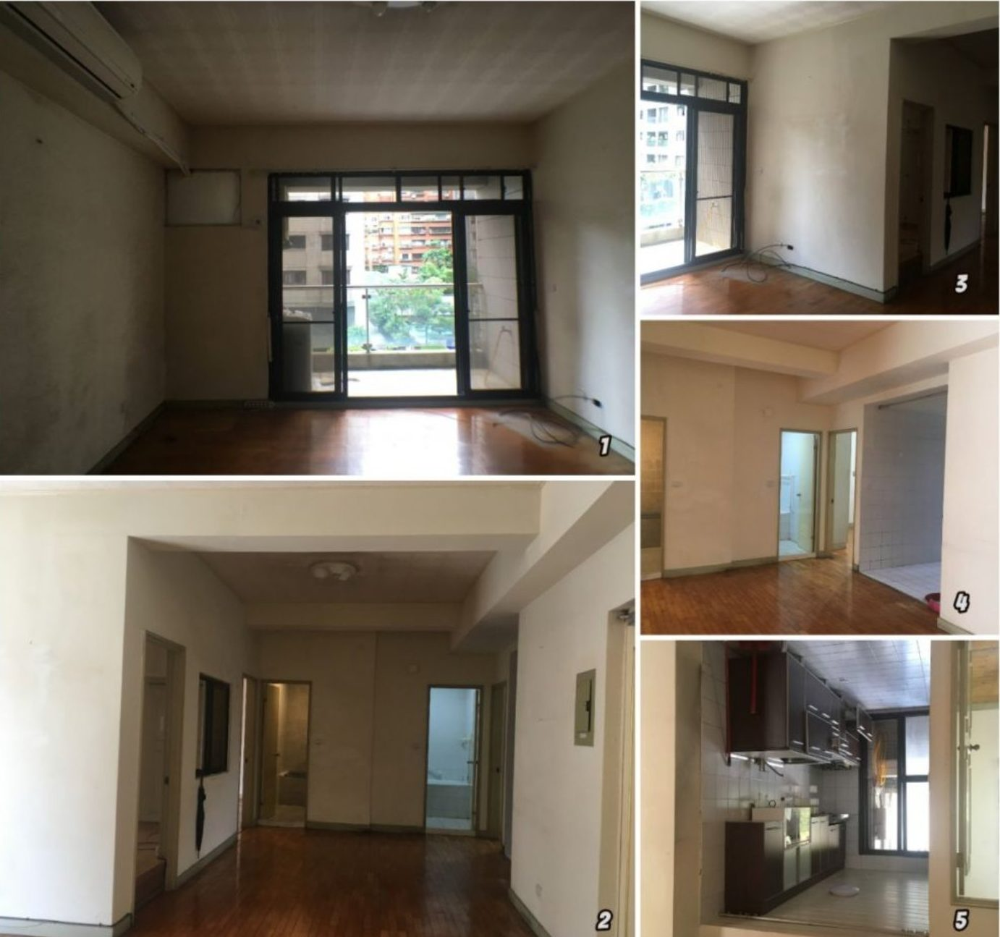
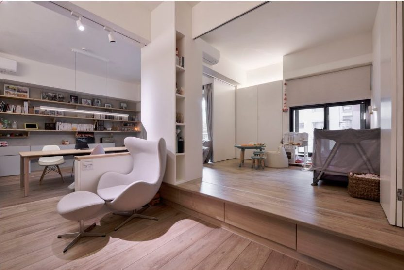
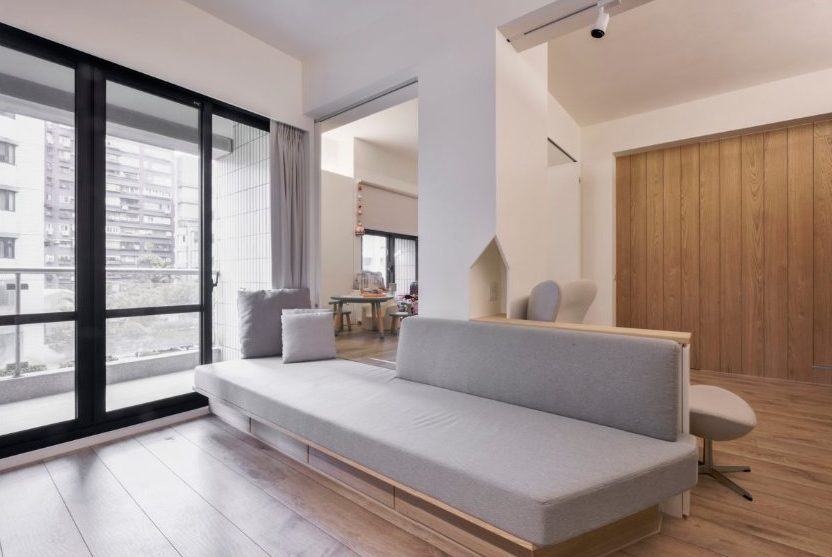
因為一家都喜歡閱讀，客廳不再以電視為中心，而成為極舒適的親子閱讀空間；書架斜撐將業主的品牌精神轉化為帶有結構性的造型，座椅平台與後方休憩平台同高，是大人談心、孩子遊戲的好所在。原本隔死的房間打開，風跟光自由流轉——主臥床頭壁燈還能隨孩子從同睡到分房彈性調整。空間感得以鬆動開展，靠的不是坪數，而是對「人」的理解。
需求會議中，女主人不好意思地承認：大門附近散落著二、三十個包包與衣物。采元順著動線一路追問，結合她醫療業的背景，歸納出她不自覺的內在邏輯——凡與外界接觸的一切都是「髒」的，一進門就得全部卸下。多年來夫妻間看似矛盾的家規，瞬間得到合理解釋。於是污衣櫃、外出首飾包包、甚至化妝櫃全數設進玄關，把「污染控管」變成順手的日常；雙冰箱大廚房、囤貨收納櫃、支援餐廳、客廳、小孩房三個空間的三向櫃，與滿足練舞需要的鏡門入口櫃，全部整合進 24 坪的空間裡。
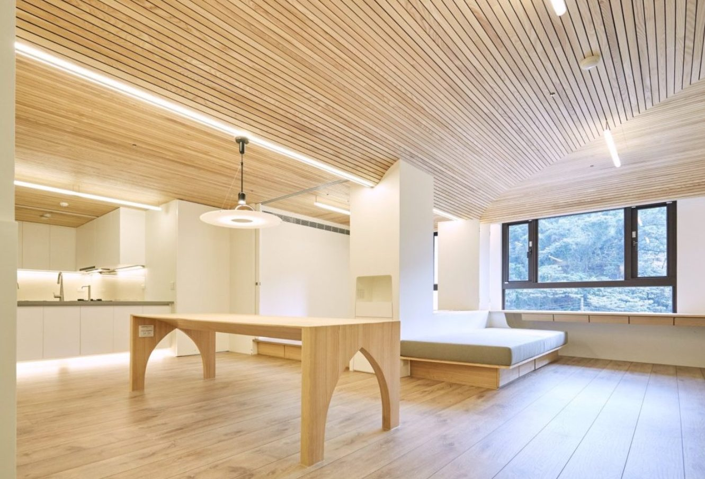
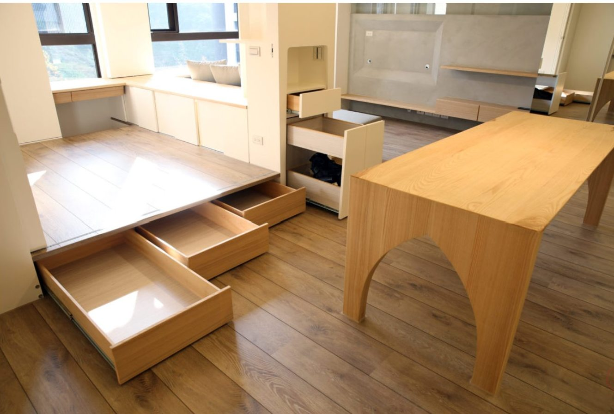
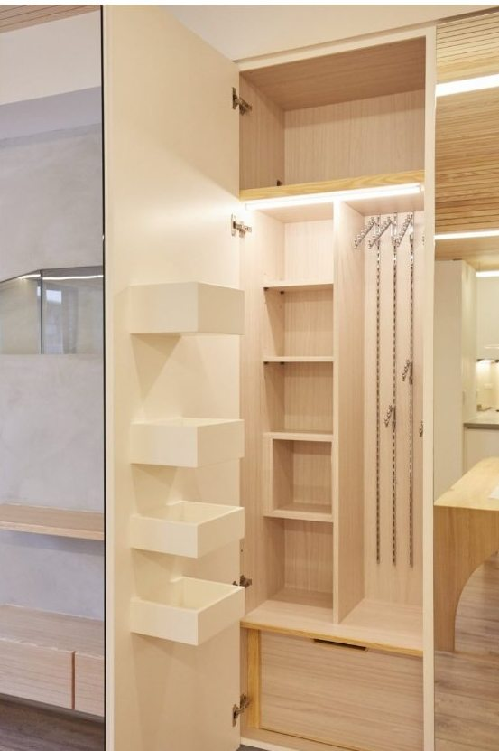
一開始的諮詢設計很是驚艷，好似做了個完整的心理諮詢，梳理出我們對房子的想望及人生的脈絡。交屋後適逢疫情，三級警戒近半年不能出門，曾是戶外活動咖的我們卻一點都不感壓迫——「因為采元的好宅設計，讓人好宅」。
她總是同理地關心業主家中每一個人的生活細節和獨特性，這讓她所設計的家充滿人的溫度和生活的氣味；對住宅家人之間感情的關照、對生活本質的展現，始終保持高度的堅持和關懷。
問題其實不在於你家做了多少櫃子，而是你不了解自己，你的設計師也不夠了解你。透過大眾對收納最常有的盲點，王采元提出突破性思考，顛覆你對收納規劃的想像。
初訪她的官網，「感覺好像挖到寶藏」。從「折衣服」這樣的小事，她能讀出夫妻間的個性差異，再轉化為化解家務摩擦的設計——這正是居住行為設計學的最佳實例。
只有停止成長的事物才有固定的樣貌。人是活的，生活是活的，設計也是活的。讓所有人回到家裡，便可展開自己最自然的狀態——因為每個人都活在自己的自然裡。
針對每個獨特的生命個體，貼緊「行為」本身，在使用需求、實際機能與設計理念之間，探索那微妙而美好的互動關係。這堂課，把采元二十多年需求會議的訪談方法與設計轉化邏輯，首次完整公開。
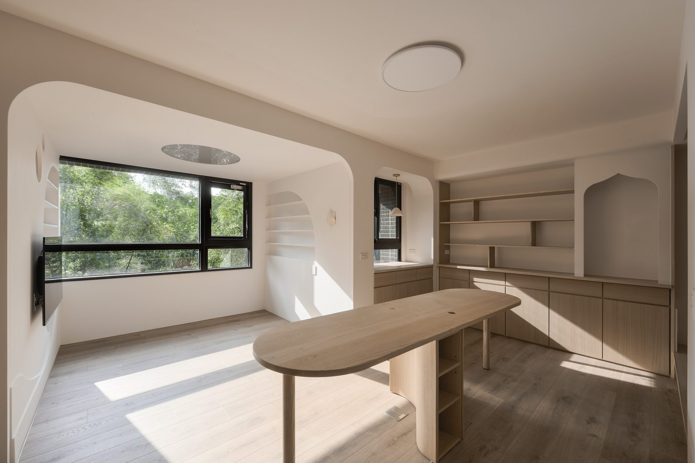
先把「人」看清楚，設計才有依據。
十五個日常場景，逐一拆解「行為」如何轉化為「設計」。
全課程共二十一講、總時數超過十二小時。
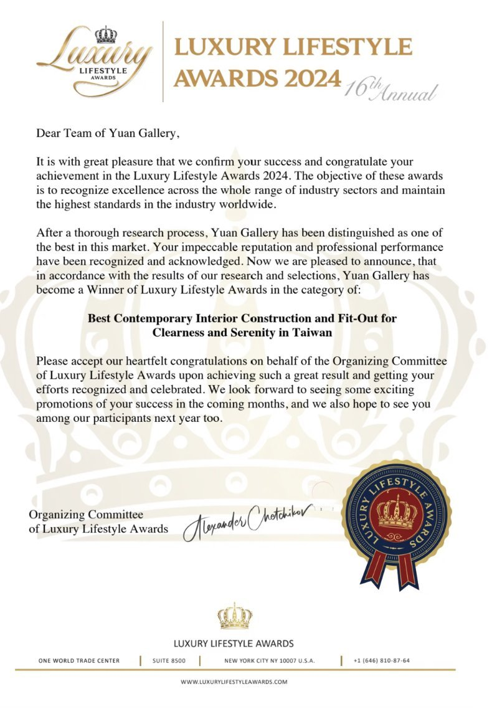
台北人，畢業於國立台灣大學物理系。2002 年畢業後，開始跟著父親（建築學者王鎮華）自學建築，並在 2004 年接下第一個室內設計案。
二十多年來，采元在每一場需求會議中陪業主挖掘說不出口的需要——這堂課，就是把這套「行為轉化為設計」的訪談方法與判斷邏輯，首次系統化公開。
對一個正要或在預見的將來要弄一個家窩的人來說，這堂設計課是一個很好建立概念和想法的課——貼緊著自己生命脈絡，可以長出自己一個溫暖的家。
在於打破成見，並尊重家中每一位成員的使用習慣及行為，以人為本的精神，打造一個專屬於自己的家，完全顛覆以往的想法。
對於家人認知差異的理解（光掛衣服的整理方式就不一樣），原來很多生活上沒有說出口的事情，真的會成為摩擦吵架的導火線。
確實需要更細緻的挖掘自己及每個家庭成員真正的喜好和需求，並大膽地提出來，越任性越好。在這個過程中，真的有點心理治療的感覺，也更了解自己和身邊最親密的家人們。
本來覺得老師的觀念很創新，但後來想想，其實每個人都應該有這樣的觀念呀。舒適的居家環境會讓人回家就覺得放鬆舒壓，好心情會讓家人關係和諧，久而久之就會形成好的循環，說不定就影響社會了呢。我最想推薦家人來上課——家人們都來上過課了，理念一致，藉由室內設計的討論，似乎也能結合身心靈的溝通，這樣的家庭關係，想不和諧都難。
會建議家人或朋友來上課，因為家是生活的核心，也是可以放鬆的地方。如果我們都忽略了家的重要性，無法凝聚家人的心，就少了很多內心安定的力量。透過這堂課，學到了更多內心深層的思考，就算不是設計師也很受用。
之前會把重點都放在空間規劃上，對於人與人、人與空間的關係僅知道很重要，但概念相對模糊。這次超越預期的是自我探索的部分——我想要先把自己挖掘得足夠透徹，才能更有能力去挖掘別人。
每一個家，都從理解住在裡面的人開始——以下是這套方法論真實長出來的樣子。

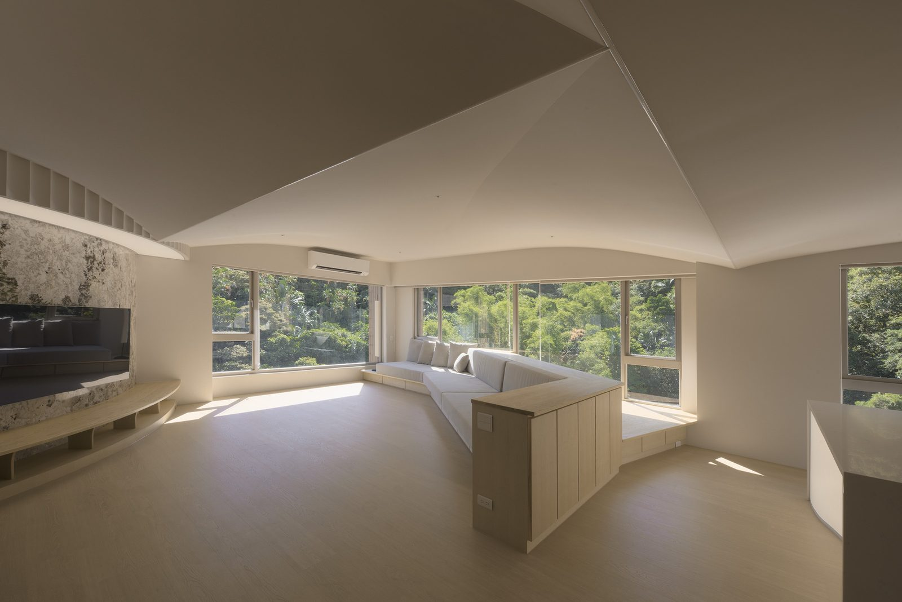
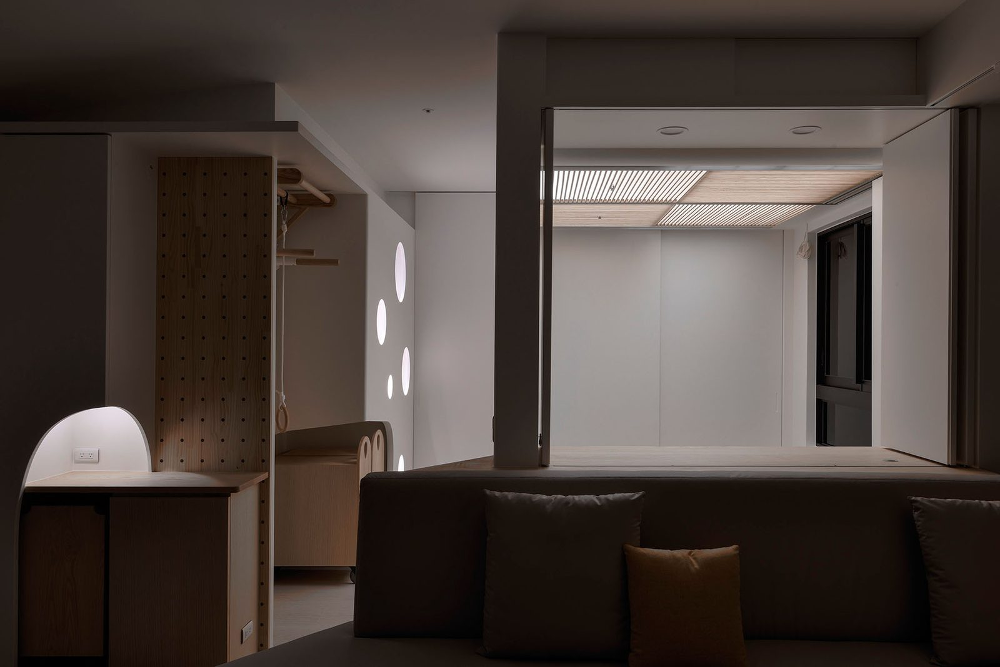
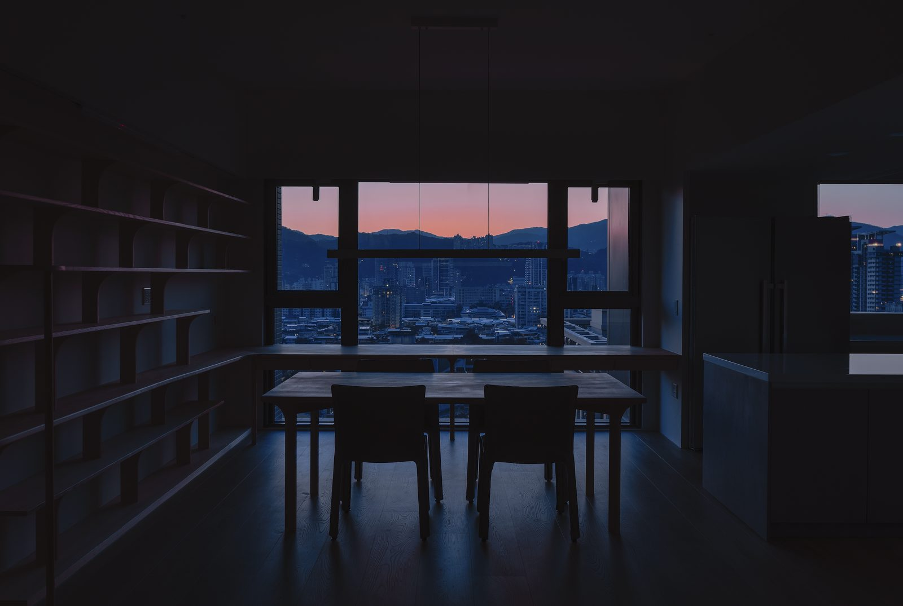
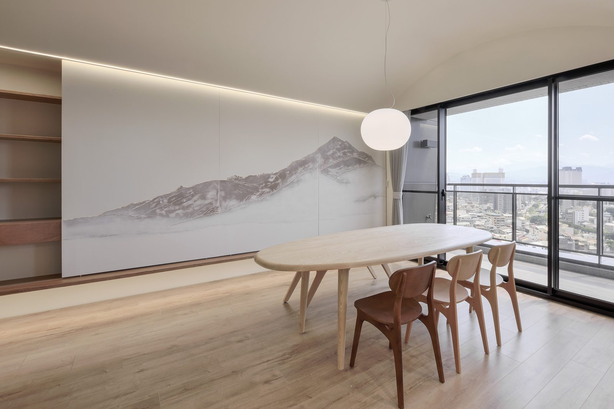
空間有餘裕，這樣的家，才真正住得久。把王采元二十多年的訪談方法與設計邏輯，變成你了解自己、打造好家的能力。